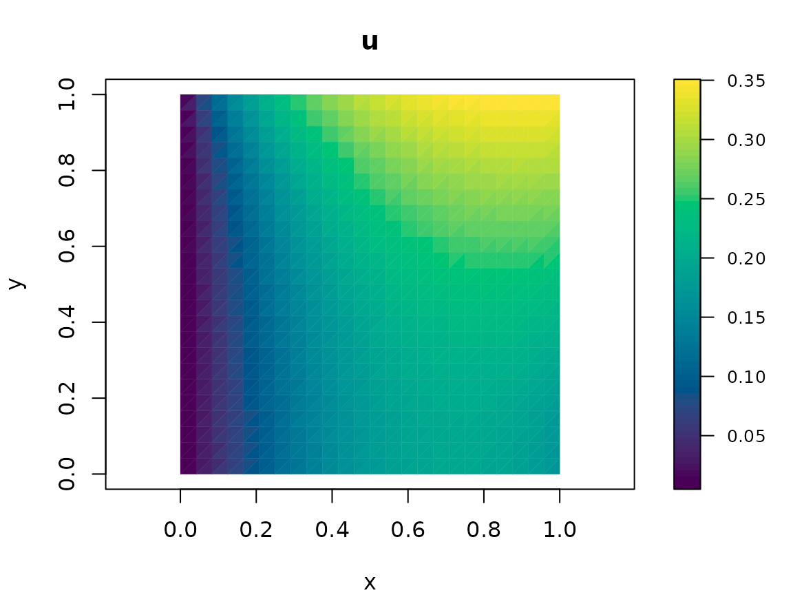

Problem constructors such as poisson_problem() cover
common equations. The weak-form language writes the variational problem
directly, in the notation of FEniCS or Gridap:
a(u, v) = L(v) \quad \text{for all } v .
Symbols and operators
trial_function(V) and test_function(V)
create the symbols u and v. grad() takes gradients,
dot() inner products, and *, +,
- combine terms. Coefficients are numbers, functions of
(x, y), or vectors (length-2 numbers or
vector_coefficient() of a function returning two columns).
integrate_domain() and
integrate_boundary(expr, marker) turn integrands into
forms.
mesh <- pde_mesh_rectangle(nx = 24)
V <- fe_space(mesh)
u <- trial_function(V)
v <- test_function(V)
f <- function(x, y) 2 * pi^2 * sin(pi * x) * sin(pi * y)
a <- integrate_domain(dot(grad(u), grad(v)))
L <- integrate_domain(f * v)
sol <- solve_pde(variational_problem(a, L, dirichlet_bc(0)))
errornorm(sol, function(x, y) sin(pi * x) * sin(pi * y), "L2")
#> [1] 0.00239796
#> attr(,"norm")
#> [1] "L2"
#> attr(,"gradient")
#> [1] "exact"grad() and dot() act only on these symbolic
objects, so they never interfere with ordinary R code.
A richer example
A convection-reaction-diffusion problem with a Robin condition on the right and a Neumann flux on the top:
\int k\nabla u\cdot\nabla v + 2uv + (b\cdot\nabla u)v \,dx + \int_{\text{right}} 3uv\,ds = \int v\,dx + \int_{\text{right}} y\,v\,ds + \int_{\text{top}} \tfrac12 v\,ds .
k <- function(x, y) 1 + x
b <- c(1, -0.5)
a <- integrate_domain(k * dot(grad(u), grad(v)) + 2 * u * v + dot(b, grad(u)) * v) +
integrate_boundary(3 * u * v, "right")
L <- integrate_domain(1 * v) + integrate_boundary((function(x, y) y) * v, "right") +
integrate_boundary(0.5 * v, "top")
s1 <- solve_pde(variational_problem(a, L, dirichlet_bc(0, "left")))
plot(s1)
The same problem with the problem constructor gives identical results:
s2 <- solve_pde(elliptic_problem(mesh, diffusion = k, reaction = 2, advection = b, source = 1,
bcs = list(dirichlet_bc(0, "left"),
robin_bc(3, function(x, y) y, "right"),
neumann_bc(0.5, "top"))))
max(abs(s1$u$values - s2$u$values))
#> [1] 7.271961e-15Supported terms
| Integrand | Kind | Discrete operator |
|---|---|---|
c * dot(grad(u), grad(v)) |
bilinear | stiffness |
c * u * v |
bilinear | mass or reaction |
dot(b, grad(u)) * v |
bilinear | advection |
u * dot(b, grad(v)) |
bilinear | transposed advection |
c * u * v on a boundary |
bilinear | boundary mass (Robin) |
c * v |
linear | load |
dot(b, grad(v)) |
linear | gradient load |
c * v on a boundary |
linear | boundary load (Neumann) |
Ill-formed expressions are rejected with a message:
u * u
#> Error:
#> ! A term contains the trial function twice.
grad(u) * grad(v)
#> Error:
#> ! Use `dot()` to multiply vector-valued expressions.Forms are assembled with the same kernels as the problem constructors, so both routes have identical accuracy. Nonlinear forms, vector-valued and mixed spaces are planned extensions of this language.